Lecture 4: Android Reverse Engineering and Patching
Understand APK internals, analyze Smali execution flow, and patch Android logic with APKTool.
Lecture 4: Reverse
Objective: Learn several application reverse engineering skills.
1. Inside the APK
APK (Android Application Package) is a file that contains all required components to install an app on Android devices. Similar to Windows .exe, manual installation is called side-loading.
Components inside an APK file:
- META-INF/: This directory exists in a signed APK and contains the file list in the APK and signature metadata for file verification.
- lib/: Native library files (
*.so) are stored in subfolders oflib/such asx86,x86_64. - res/: This folder contains all XML resources and drawables in different densities like
mdpi,hdpi, etc. - AndroidManifest.xml: Describes the APK name, version, and core app definitions.
- classes.dex: Contains compiled source code converted into DEX bytecode.
- resources.arsc: Some compiled resources and definitions are stored here and often kept uncompressed for faster runtime access.
APK is an archive file, specifically in zip format-type based on JAR file format, with .apk as the extension. Run unzip:
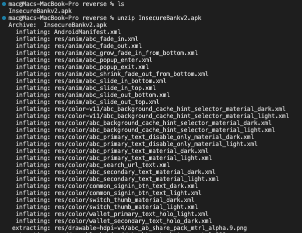
After unzipping, check the extracted files:
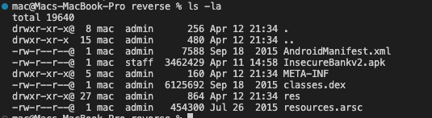
This is the same file list mentioned above. However, the files are still in binary format, so they are not directly readable. Therefore, we need to reverse engineer it with APKTool. This tool also helps with patching later.
apktool d InsecureBankv2.apk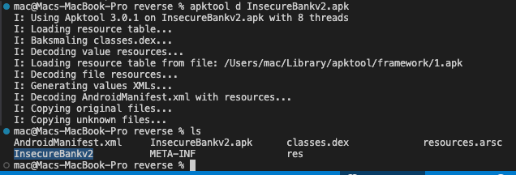
The decompiled output is saved in the InsecureBankv2 folder. APKTool decompiles AndroidManifest back to raw XML and converts resource.arsc and classes.dex into SMALI.
2. Smali
All steps in the Inside the APK section can also be automated with ByteCode Viewer.
We need to understand smali to understand how code execution flows and to perform patching that changes runtime behavior. Below is an example of smali execution flow.
In Bytecode Viewer, go to view -> pane 2 -> Smali/DEX to display smali code in the second window.
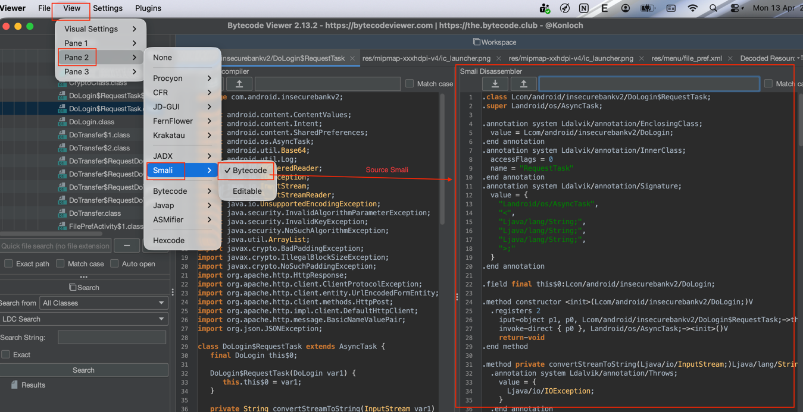
Now let us analyze the admin login bypass code shown earlier. This is the original code before translating to smali.
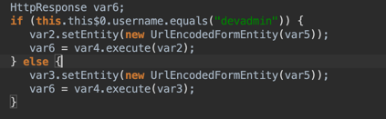
Then search for devadmin in smali code to locate the handling logic.
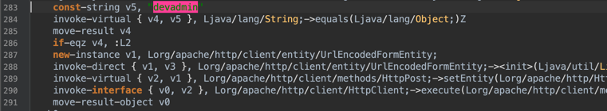
A quick explanation of this smali code:
- Initialize string
devadminand store it in variablev5. - Line 284 compares input string
v4withv5. If true, it returns1; if false, it returns0. - Line 285 stores the comparison result in variable
v4. - Line 286,
if-eqzmeansequal zero. Ifv4 = 0, execution jumps toL2:; otherwise it continues.
Now we analyze the two branches of this condition.
Branch when if-eqz is not satisfied:
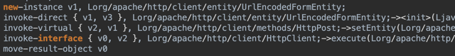
Branch when if-eqz is satisfied:
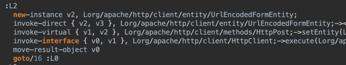
Basically, the two branches are not very different.
However, one question is: Why read smali code when we can read Java source code?
3. Patching Android App
Patching an app means modifying program code to make it behave as we want. We use APKTool for patching. First, decompile the APK:
apktool d InsecureBankv2.apk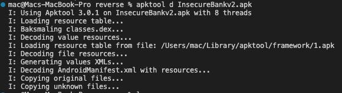
Open the res folder, which stores resources we can quickly modify. Go to the app string file at InsecureBankv2/res/values.
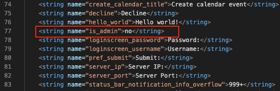
Here we found a strange value; try changing isAdmin: yes and see what happens.
Now recompile to APK:
apktool b InsecureBankv2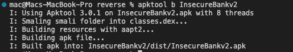
After compilation, the file is usually in InsecureBankv2/dist. Before installation, we must re-sign it because META-INF still contains the old signature from the original APK. Use keytool and jarsigner.
Create a key with keytool:
keytool -genkey -v -keystore my-release-key.keystore -alias alias_name -keyalg RSA -keysize 2048 -validity 10000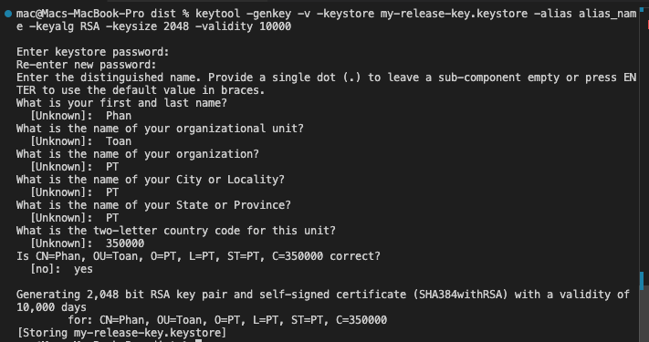
Then sign with that key using jarsigner:
jarsigner -verbose -sigalg SHA1withRSA -digestalg SHA1 -keystore my-release-key.keystore InsecureBankv2.apk alias_name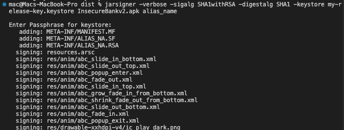
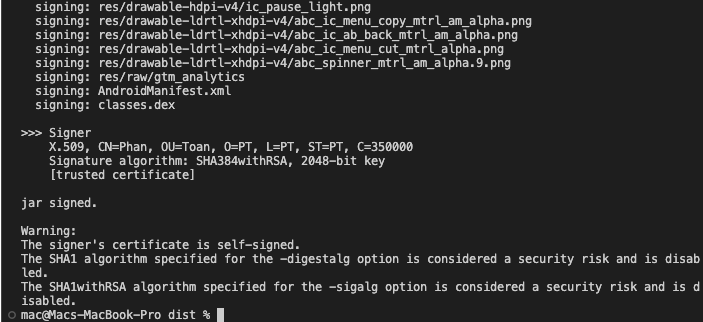
Before installing the new app, remove the old app first. We also rename it to InsecureBankv2_patch to avoid confusion.
Now we can see Create User. This section only appears after changing isAdmin: Yes. The result shows that app patching is successful.
4. Root Status Bypass Patch
Currently, the app shows Device not root, even though our system is already rooted. Let us bypass this check to prove the device is rooted.
Open Bytecode Viewer, load the APK, and search for Root:
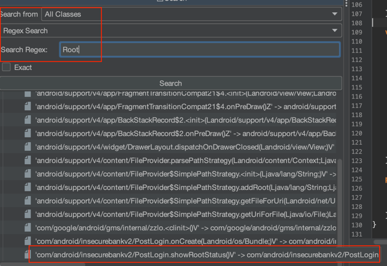
The result includes showRootStatus, which is suspicious. Open and inspect it:
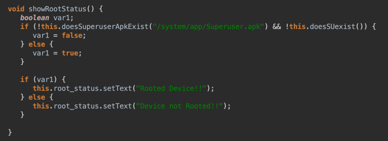
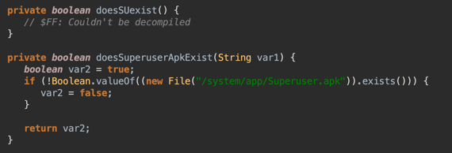
This code checks whether /system/app/Superuser.apk exists. If yes, it reports rooted; otherwise it ignores. Now patch this logic from smali:
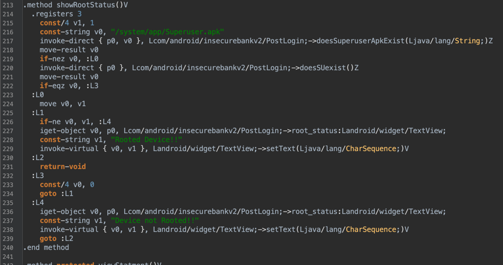
A brief explanation: since current output is Device not root, the condition in if(... && ...) is likely satisfied, so both parts return false. Trace the current flow:
- Lines 215 and 216 initialize two variables with corresponding values.
- Line 217 checks file existence at
/system/app/Superuser.apk. It does not exist, and line 218 storesv0 = 0. - Line 219
if-eqzmeansequal zero, so flow jumps toL3:, setsv0 = 0, then jumps toL1:. - At
L1:,if-nemeansnot-equal. Result is not equal, so it jumps toL4:, printsDevice not Rooted!!, and exits the method.
How to patch: edit the logic directly. For example, change line 226 to if-eq or line 233 to const/4 v0, 1. Then sign again with the same tools. Here we patch line 233 and re-sign.
Decompile with apktool, then edit in VSCode or Notepad.
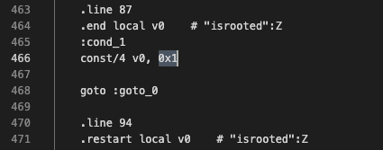
Compile again:
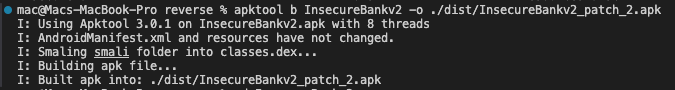
After signing, reinstall it:
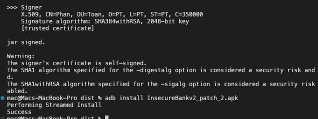